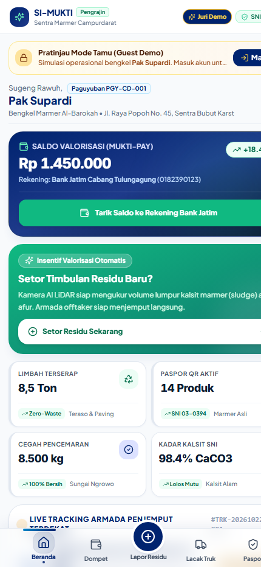
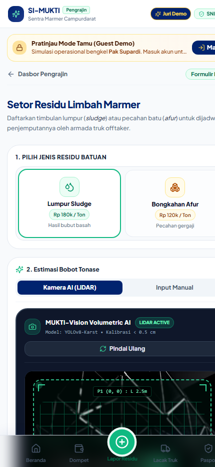
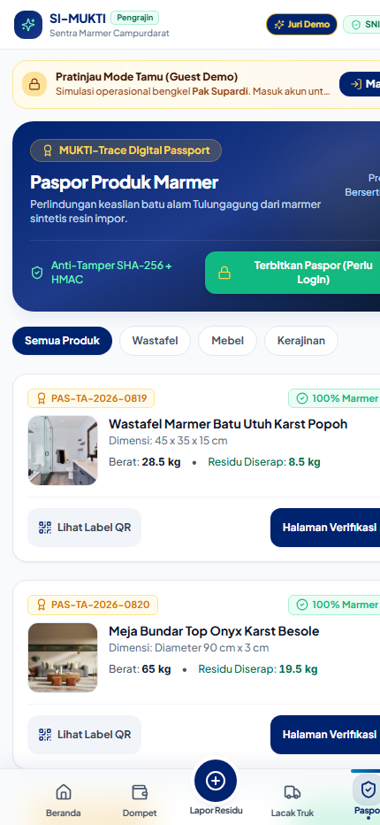

Arsitektur informasi, grid ergonomis, tombol ramah bengkel (≥56dp).

Beranda Pengrajin (Pak Supardi), saldo valorisasi Rp 1.450.000, & telemetri.

Pelaporan limbah, pemindaian kamera AI LiDAR volumetrik (YOLOv8-Karst).

Katalog paspor produk aktif terverifikasi (PAS-TA-2026) & cetak kode QR.